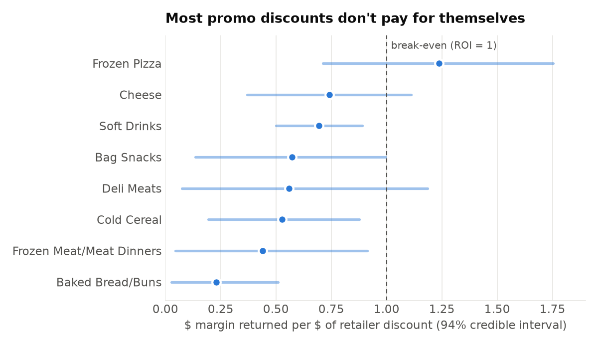
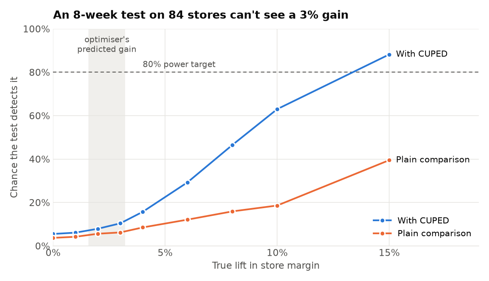

Promo Optimization Engine
Code: github.com/Saminay786/promo-optimization-engine
TL;DR:
- Discounts work, but less than they appear to. After controlling for displays, mailers and seasonality, the effect drops by about 30%, and 44% of promo volume would have sold anyway.
- Planning with corrected numbers pays. An optimised promo calendar beats the usual “deepest discount on top sellers” rule on the same budget.
- At category level, most discounts don’t pay for themselves (7 of 8 categories).
- The predicted gain is too small to prove with a store test of this size. That changes how a “no effect” result should be read.
The problem
Retailers spend a lot on promotions. The common way to judge them is “units sold during the promo vs. a normal week”. That number mixes up three things: the discount itself, the display or mailer that usually comes with it, and sales that would have happened anyway. Plan from it, and you over-invest in discounts.
The project works through four questions in order:
| Step | Question | Method |
|---|---|---|
| 1. Measure | How much extra volume does a discount actually cause? | Double Machine Learning |
| 2. Decide | Which product should get which discount, in which week? | Integer optimisation (CP-SAT) |
| 3. Cross-check | Does a top-down view agree? | Bayesian marketing mix model |
| 4. Test | How would we prove it works in real stores? | A/B test design: power simulation + CUPED |
Data: dunnhumby’s The Complete Journey, with two years of grocery transactions from ~2,500 households plus display and mailer data. I used the 137 top-revenue products over 99 weeks (11,892 product-weeks), excluding fuel, gift cards and miscellaneous items.
1. Measure: what does a discount really cause?
I built a product × week panel. The treatment is discount depth. The controls are display/mailer exposure, past sales, seasonality and how much else in the category was on promo. I then estimated the effect with Double ML (EconML LinearDML, LightGBM, 5-fold cross-fitting) and compared it with a naive estimate and a placebo test.
| Elasticity θ | What 10% off does | |
|---|---|---|
| Naive (no controls) | 3.49 | +42% units |
| Double ML | 2.51 (95% CI 2.18–2.85) | +29% units |
| Placebo test | 0.01 | no effect, as expected |
About 43.8% of promo volume was non-incremental. Those were sales the retailer would have made anyway.
2. Decide: build the promo calendar
The per-category effects feed an integer program (OR-Tools CP-SAT). It picks a discount (10/20/30% or none) for each product-week, subject to a budget, weekly promo slots, a frequency cap, a per-category cap and no back-to-back promos. I compared it with a common rule of thumb: deepest discount on the top sellers.
Same $5k budget, 8 weeks, 10 promo slots per week:
| Incremental margin | Budget used | |
|---|---|---|
| “Deepest discount on top sellers” | $60 | full |
| Optimised calendar | $719 | 37% less |
The rule of thumb loses mostly because it puts deep discounts on products that would sell anyway. Treat the absolute dollar figure with caution: step 3 suggests it’s overstated.
3. Cross-check: the category view
As a top-down check, I modelled weekly category sales for 8 categories with a Bayesian marketing mix model (PyMC-Marketing). It has three levers (discount rate, mailers, displays) and accounts for carryover and diminishing returns.

- Discount ROI is below 1 in 7 of 8 categories. Soft drinks return about $0.69 per $1 of discount. Only frozen pizza is above break-even (1.24), and even there the interval is wide.
- Displays look cheap to break even on (roughly $0.005–0.08 per placement). That hints at moving some discount money into displays, depending on costs I don’t have.
- Both models rank the categories the same way. But the category-level effect is only 43–55% of the product-level one for bread, cheese and soft drinks (19% for deli meats). That fits with discounts partly stealing sales from other products in the same category (cannibalisation). So the optimiser’s gain is probably about half what step 2 says.
- Model health: 0 divergences, max r-hat 1.008, R² 0.44–0.64 for 7 of 8 categories.
4. Test: how would we prove it works?
A model’s prediction isn’t proof. Before rolling out the calendar, a retailer would want to test it, so I designed the experiment:
- Design: randomly split stores 50/50. Treatment stores run the optimised calendar, and control stores keep current practice.
- Unit: stores, not shoppers, because a promo calendar applies to everyone who shops in a store. The data has 582 stores. The 137 planned products sell in 115 of them, and 84 have enough weekly sales to include.
- Metric: weekly promo margin per store on the planned products.
- Analysis: compare the groups with a t-test, using CUPED to adjust for each store’s margin in the 8 weeks before the test. Big stores stay big, so removing that predictable part cuts the noise.
Then I checked the design on real history: 84 stores, with 1,000 simulated tests per scenario.
Is the analysis trustworthy? I ran “A/A tests”: random splits with no real change. The test raised a false alarm 4–6% of the time, which matches the 5% it should.
How big an effect could it detect? I added known lifts to the treatment stores and counted how often the test caught them:

| Answer | |
|---|---|
| Smallest lift detectable 80% of the time (8 weeks, CUPED) | ≈13% (12% at 12 weeks, 15% at 4 weeks) |
| Without CUPED | never reaches 80%, even at a 15% lift |
| Optimiser’s predicted gain vs. current practice | ≈3% (≈1.6% if step 3 is right) |
| Chance of detecting 3% with this test | ≈10% |
| Stores needed to detect 3% | ≈1,500 |
What this means:
- With these stores, a test would almost always say “no significant effect”, even if the calendar works. That result shouldn’t be read as the calendar failing.
- CUPED matters a lot here. It roughly triples the chance of detecting a real effect.
- The real fix is a bigger or less noisy test: full-store sales instead of a 2,500-household panel (here each store sees only ~100 panel households, while a real store likely serves far more), a metric that pools more categories, a longer test, or a switchback design.
It’s much better to learn this before running a test than after.
Limitations
- Observational data. The Double ML estimate is causal only if the controls capture everything that drives both promo decisions and sales.
- No cost data. Margin is assumed to be 30% of shelf price, and suppliers are assumed to fund 50% of the discount. Display and mailer costs are unknown.
- The optimiser likely over-credits discounts. Cannibalisation is handled only by a simple category cap, and pull-forward (shoppers stocking up) only by a “no back-to-back promos” rule.
- The test simulation is simplified. It applies the lift evenly to the store metric, and panel stores only see panel households’ purchases. The method transfers to a real retailer, but the store count doesn’t.
- The MMM has 82 weeks per category, and mailers and displays often run together, so their separate effects are uncertain.
What’s next
- Scale the product-level effects by a category-level factor, so the optimiser stops over-crediting discounts.
- Model pull-forward directly instead of using a rule.
- Extend the test design with a switchback (alternating weeks) and stratified store assignment, and compare their power.